ODRAĐENE VJEŽBE I PROJEKTI KROZ SEMESTAR
Vježba 1
U prvoj vježbi za zadatak smo imali napraviti naš vlastiti font. Koristio sam ga u prvom projektnom zadatku, dupini.
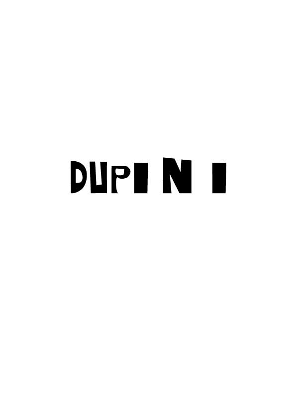
Vježba 2
Bezierove krivulje.
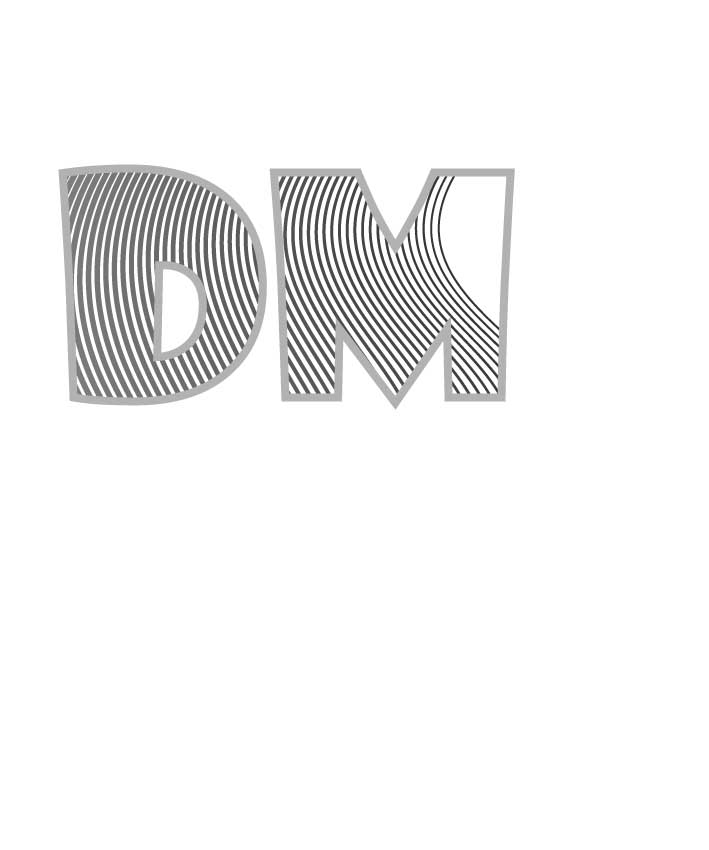
Vježba 3
Transformacije, multipliciranje i grupiranje.
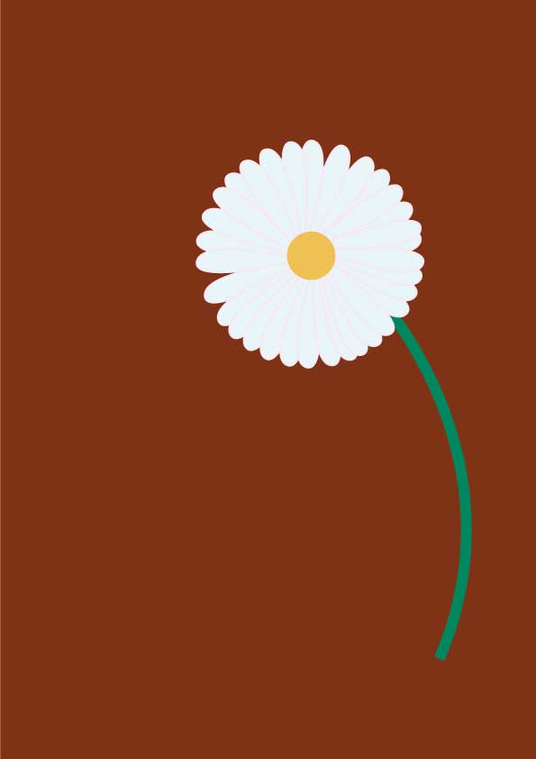
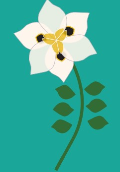
Vježba 4
Zadatak za četvrtu vježbu u illustratoru, uglavnom smo učili gradiente.
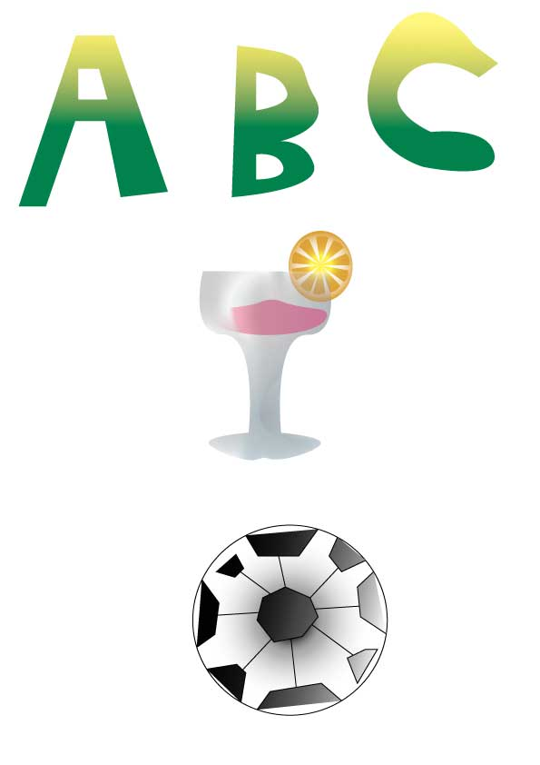
PROJEKTNI ZADATAK 1
Nakon vježbi uslijedio je PZ.
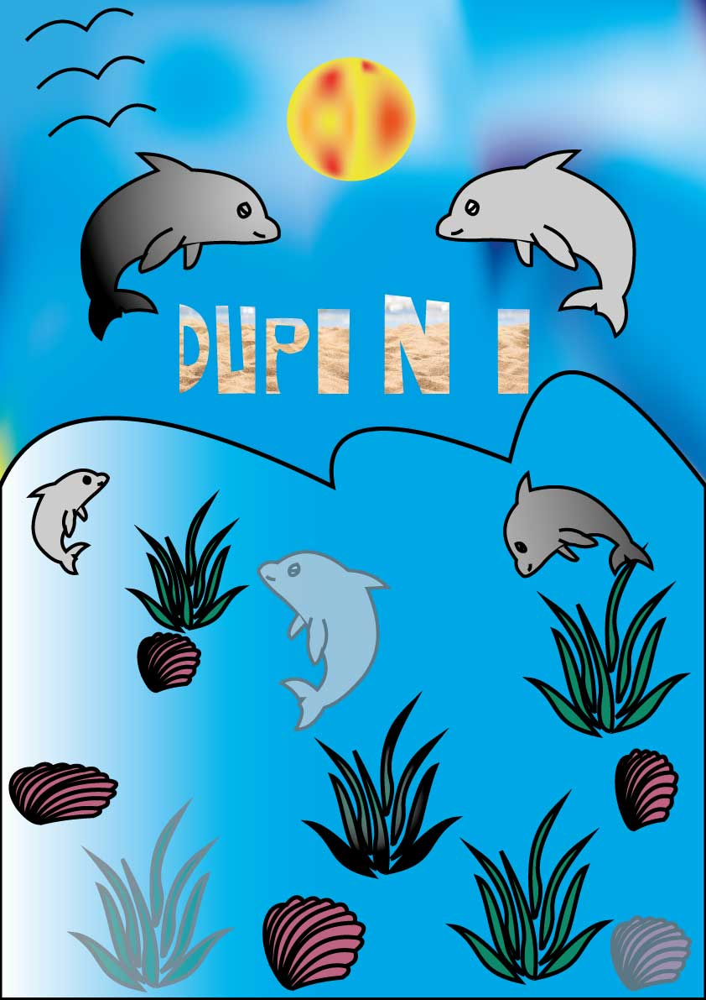
Vježba 5
Za vježbu 5 je bilo retuširanje.
 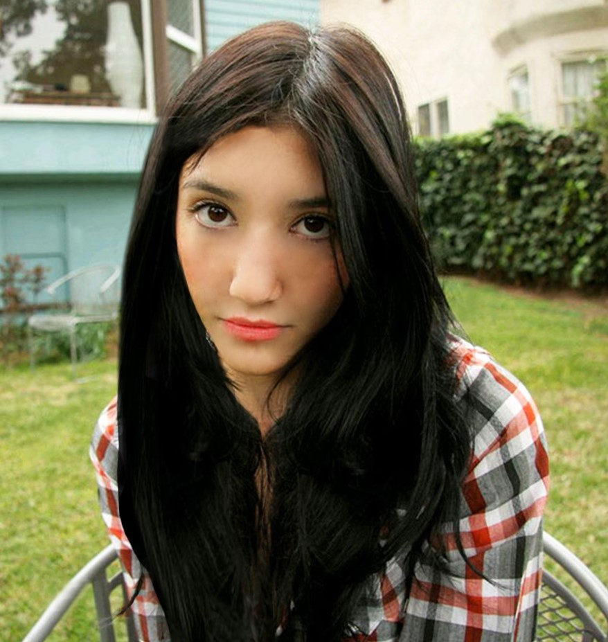
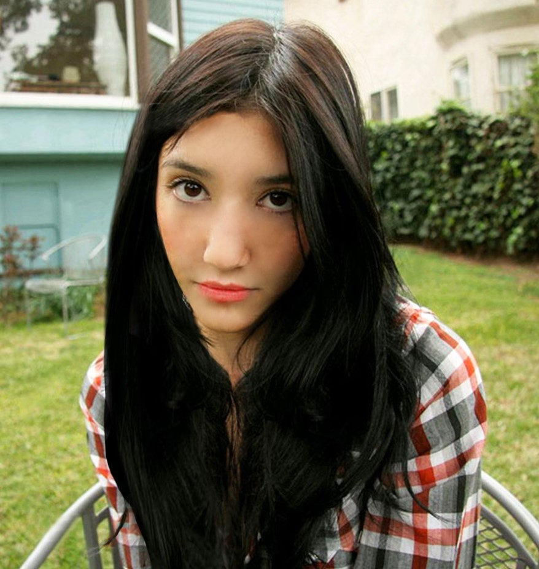
Vježba 6
Vježba 6 je u photoshopu.
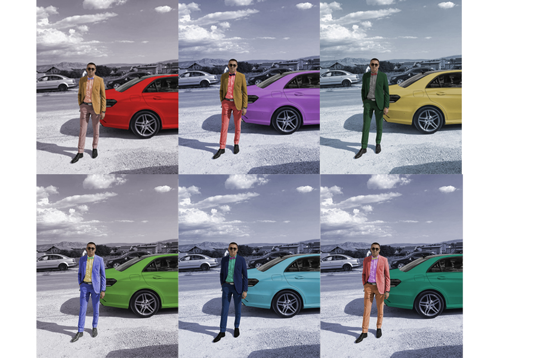
Vježba 7
Fotomontažu od raznih fotografija te stvaranje realističnog dojma.
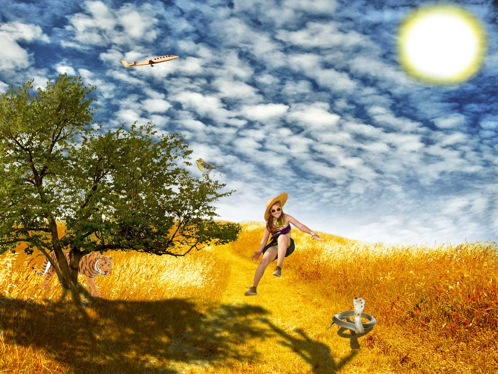
PROJEKTNI ZADATAK 2
Drugi projektni zadatak.
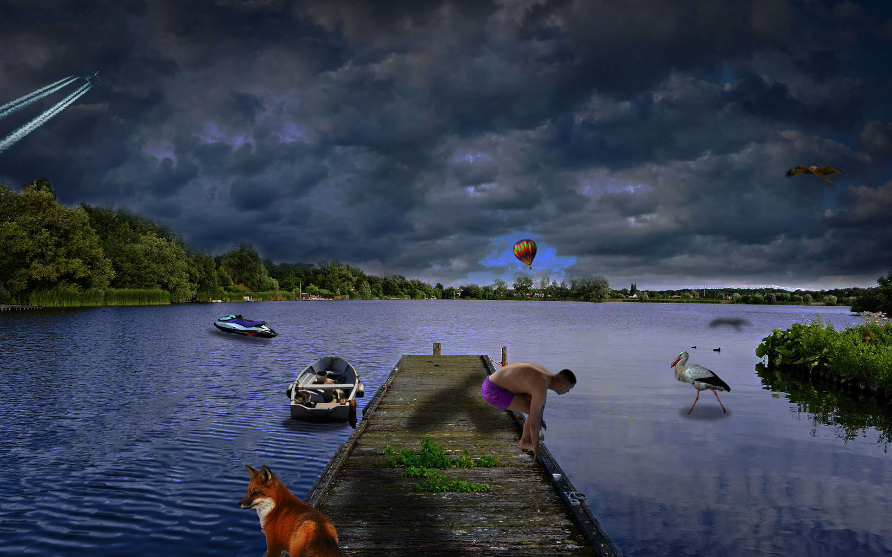
Vježba 8
U osmoj vježbi zadano nam je napraviti kinemagraf.


Vježba 9
Za devetu vježbu imali smo zadatak napraviti video.
Vježbe 10. i 11.
Ove dvije vježbe prikazujem sa ovim html dokumentima koje prezentiram.